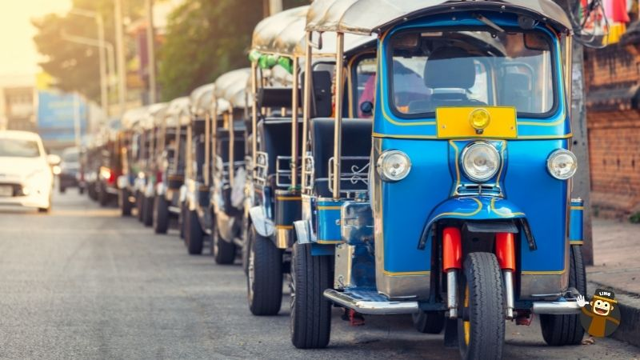

Overview
Purpose
[This sites purpose is to provide useful information for people going to Thailand. It will cover reccommended places to go among other essential tips. ]
Audience
The target audience are people planning trips to Thailand. It will focus more on those planning short trips, as I don't know too much about visa requirements.
Branding
Website Logo

Style Guide
Color Palette
Palette URL: https://coolors.co/396e94-e7c24f-a43312-381d2a-aabd8c| Primary | Secondary | Accent 1 | Accent 2 |
|---|---|---|---|
| [#ADFFEC] | [#DB9D47] | [#4FCFC0] | [#AA4465]> |
Typography
Heading Font: [Playpen Sans]
Paragraph Font: [Cormorant Garamond]
General Info
When visiting Thailand, there are several recommendations that can help make your trip more enjoyable, memorable, and respectful of the local culture. Thailand is known for its rich history, beautiful landscapes, delicious cuisine, and warm hospitality, so here are some tips to enhance your travel experience: Respect the Culture: Thai culture places a strong emphasis on respect and politeness. When entering temples, remember to dress modestly, remove your shoes, and avoid public displays of affection. It's customary to greet people with a slight bow, known as the "wai," and it's considered impolite to touch someone's head. Try the Local Cuisine: Thai food is famous worldwide for its flavors and variety. Don't miss the chance to try street food, as it offers authentic and delicious dishes. However, ensure that the food stalls you choose appear clean and follow basic hygiene standards. Stay Hydrated: Thailand can be quite hot and humid, so stay hydrated, especially if you're exploring outdoor attractions. Bottled water is widely available, and you should drink it to avoid dehydration. Bargain Respectfully: Haggling is common in Thailand, especially in markets and street stalls. However, remember to do so with a smile and respect. Bargaining should be seen as a friendly interaction rather than a confrontational one. Learn Basic Thai Phrases: While many people in tourist areas speak English, learning a few basic Thai phrases like "hello," "thank you," and "how much?" can go a long way in establishing rapport with locals and showing respect for their language. Be Mindful of the Environment: Thailand is known for its stunning natural beauty, from pristine beaches to lush jungles. Please be responsible and minimize your environmental impact by disposing of waste properly and respecting protected areas and wildlife. Dress Appropriately: Dress modestly, particularly when visiting temples and other religious sites. Pack lightweight, breathable clothing, but be mindful of local customs and cultural norms. Stay Safe: While Thailand is generally a safe destination for tourists, it's wise to exercise common sense and caution. Keep an eye on your belongings, be aware of your surroundings, and avoid risky situations. Explore Beyond the Tourist Hubs: While places like Bangkok, Phuket, and Chiang Mai are popular destinations, consider exploring less-visited areas to discover hidden gems and a more authentic Thai experience. Enjoy Festivals and Events: Thailand hosts numerous festivals and events throughout the year, such as Songkran (Thai New Year) and Loy Krathong. Participating in these cultural celebrations can provide a unique and memorable experience. Remember that every country has its own customs and traditions, and respecting these can make your visit more enriching and enjoyable. By following these recommendations, you'll be better equipped to savor the beauty and charm of Thailand while fostering positive interactions with the local community.
The Four Regions
Thailand is a diverse and captivating country that can be broadly divided into four distinct geographical regions, each with its own unique characteristics, landscapes, and cultural influences. These regions are: Northern Region: The northern region of Thailand is known for its lush, mountainous terrain, including the famous mountain range known as the Doi Inthanon National Park. Chiang Mai, the region's largest city, is a cultural and historical hub, offering visitors a chance to explore ancient temples, local hill tribes, and vibrant night markets. The northern region's cooler climate, rich agricultural land, and traditional Thai culture make it a popular destination for tourists seeking natural beauty and cultural experiences. Northeastern Region (Isan): Isan, the largest and least-visited region of Thailand, is located in the northeast and is characterized by its vast plains, rice fields, and the Mekong River that borders Laos. This region has a strong influence from the Lao culture and is famous for its spicy and unique cuisine, which includes dishes like som tam (green papaya salad) and sticky rice. Isan is also home to several historical and archaeological sites. Central Region: The central region is often considered the heart of Thailand and is dominated by the bustling capital city of Bangkok. This region is known for its fertile plains, where rice and other crops are extensively cultivated. It's also the economic and political center of the country, with a blend of modern and traditional influences. Visitors can explore historical sites like Ayutthaya, the ancient capital, as well as the vibrant urban life in Bangkok. Southern Region: The southern region of Thailand is renowned for its stunning coastline, beautiful beaches, and idyllic islands in the Andaman Sea and Gulf of Thailand. This region offers a wide range of attractions, from the bustling city of Phuket to the laid-back atmosphere of Krabi, and the pristine marine national parks like Phi Phi and Similan Islands. Southern Thailand is a popular destination for water sports, scuba diving, and beach relaxation, making it a tropical paradise for travelers from around the world. Each of these four regions of Thailand contributes to the country's rich tapestry of culture, landscape, and experiences, making it a destination that appeals to a wide range of interests and preferences. Whether you're seeking a cultural immersion, natural exploration, or beachfront relaxation, Thailand's diverse regions have something special to offer.
Navigation
Site Map
Content
Home page
This page is for places and activities overlooked by most tourists. It also goes over ways to travel around.
Images for the Home page
[Page 2]
This page is for basic Thai phrases to get by while on vacation. Learning will help connect to the people and have a more enjoyable experience.
Images for the Page 2
[Page 3 (will do if I have time)]
This page is for foods to try and where to find them.
Images for the Page 3
Wireframes
Create three wireframes for your site. One for each page and list them here
Home
[This will be where a lot of the general info will go.]
[Page 2]
[This will have pictures of places to go as well as which areas they are in with information on how to get there and a little history]
[Page 3]
[This page will have images of common situations tourists will see and what phrases they can use.]